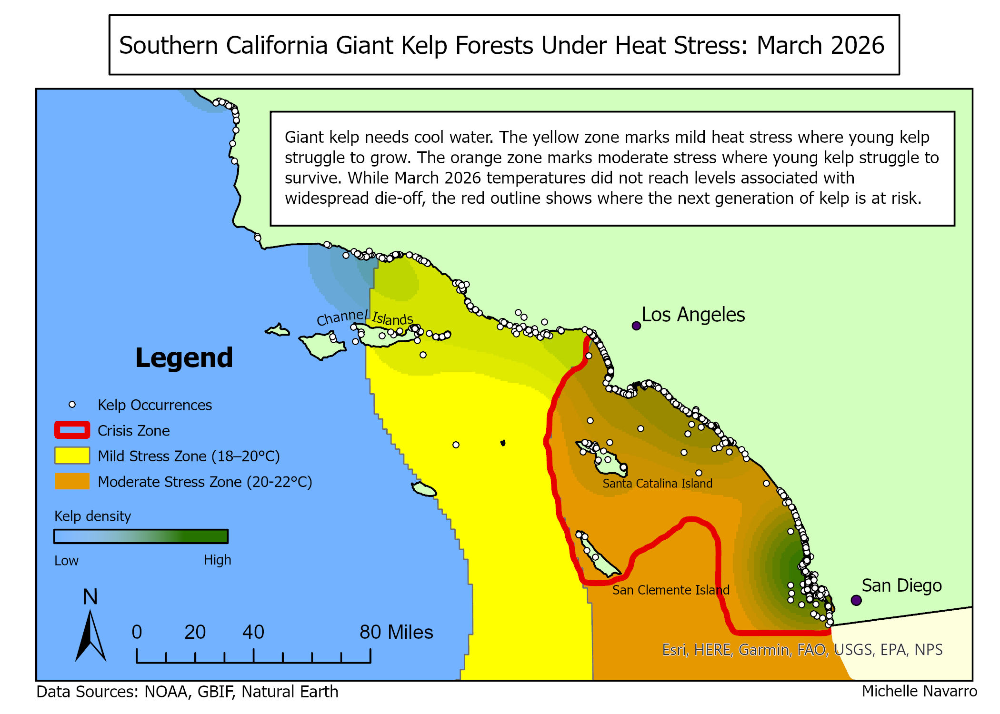
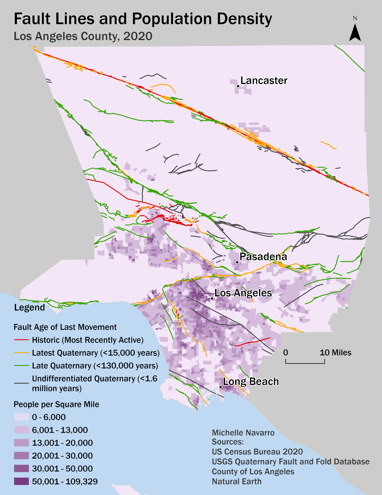
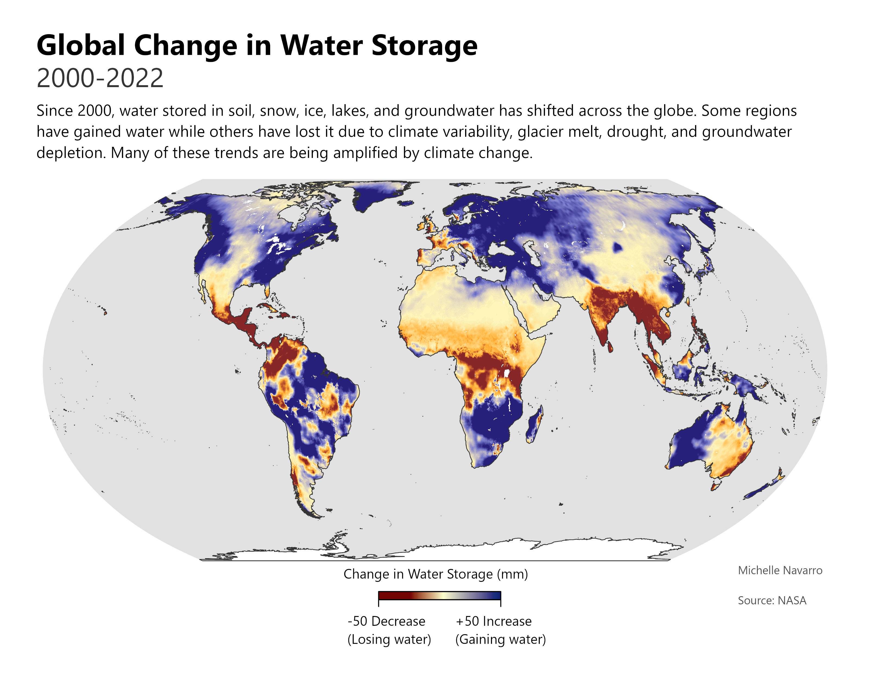
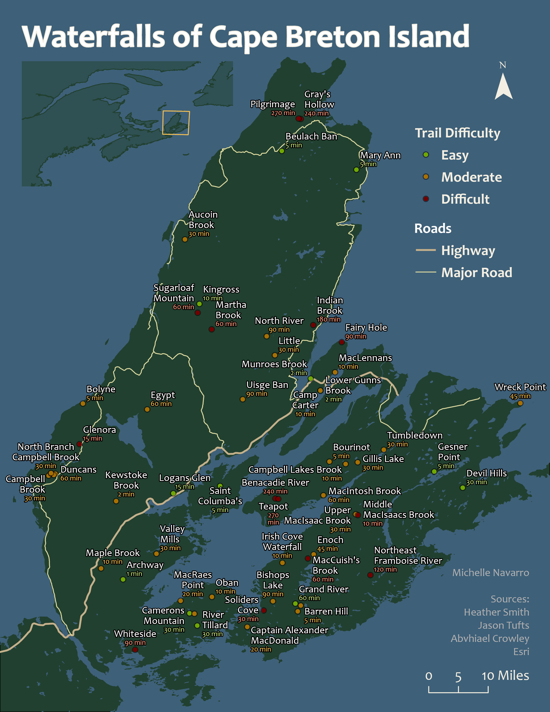
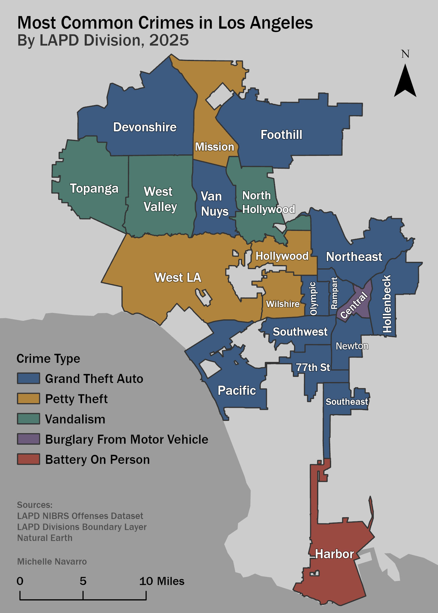
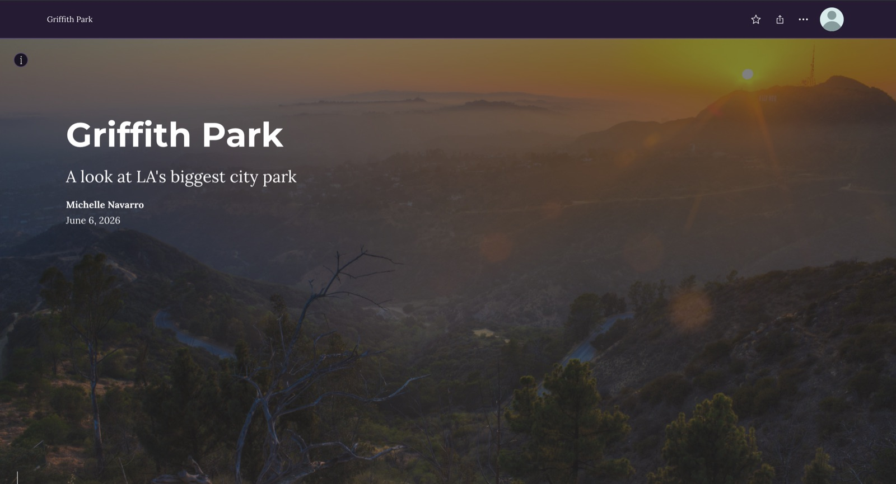

Software Engineer — Los Angeles
Full-stack engineer with a curiosity for climate and geospatial problems.
I spend a lot of time outside and got curious about what I was looking at, which led me to GIS and spatial data. It's a way into problems involving the physical world, from climate and water to public health and infrastructure. These maps are from my certificate at Pasadena City College, click any to expand.

Mapped kelp occurrences against NOAA sea surface temps to find stress zones off the Southern California coast. The red boundary marks where the next generation of kelp is at risk.
NOAA · GBIF · Natural Earth

USGS quaternary fault data over 2020 census density. Historic faults run right through the densest corridors in LA County.
US Census Bureau · USGS

NASA GRACE satellite data tracking how water stored in soil, snow, ice, lakes, and groundwater has shifted globally from 2000 to 2022. Drought, glacier melt, and groundwater depletion are bleeding regions dry — amplified by climate change.
NASA

Every named waterfall on Cape Breton Island, mapped by trail difficulty and hike time.
Heather Smith · Jason Tufts · Abvhiael Crowley · Esri

Assigned each LAPD division its most frequently reported offense type for 2025, joining NIBRS incident data to division boundaries. Grand theft auto dominates most of the city, while Harbor stands alone with battery on person as its leading crime.
LAPD NIBRS Offenses Dataset · LAPD Divisions Boundary Layer · Natural Earth

An interactive ArcGIS StoryMap exploring LA's biggest city park through photos, maps, and narrative.
ArcGIS StoryMaps